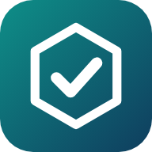

تطبيقات الشبكة (أندرويد)
تلات تطبيقات لكل المواقع الـ22 (وأي موقع يتربط بعدين): كل الطلبات والاستعلامات والخدمات من كل المواقع بتدخل غرفة عمليات واحدة.
⬇ تطبيق المالكالتحكم والإدارة والتقارير وربط المواقع
 ⬇ غرفة العملياتالطلبات والتوزيع والتتبع والإشعارات
⬇ غرفة العملياتالطلبات والتوزيع والتتبع والإشعارات

⬇ تطبيق الفنيالمهام والخريطة والمساعد — يتفعّل بكود من المالك
- افتح هذه الصفحة من متصفح كروم مباشرة (وليس من داخل واتساب أو فيسبوك).
- اسمح لكروم بتثبيت التطبيقات: الإعدادات ← «تثبيت تطبيقات غير معروفة».
- الفني وموظف العمليات: افتح التطبيق واكتب كود التفعيل اللي وصلك من المالك. الكود لجهاز واحد.
- المالك: افتح تطبيق المالك واكتب الرمز السري مرة واحدة.
لو كان عندك نسخة قديمة بنفس الاسم، التحديث بيتثبت فوقها. التحديثات اللاحقة تصل تلقائيًا دون إعادة تثبيت.